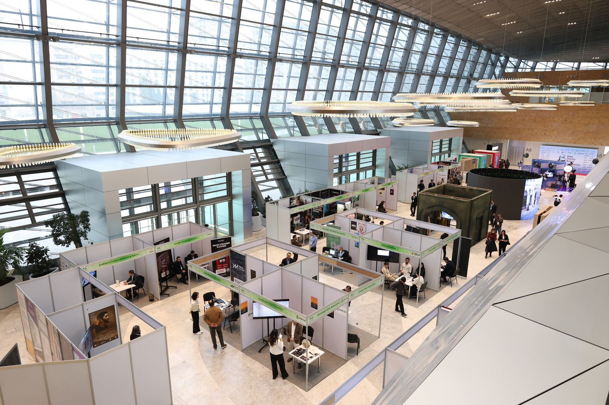
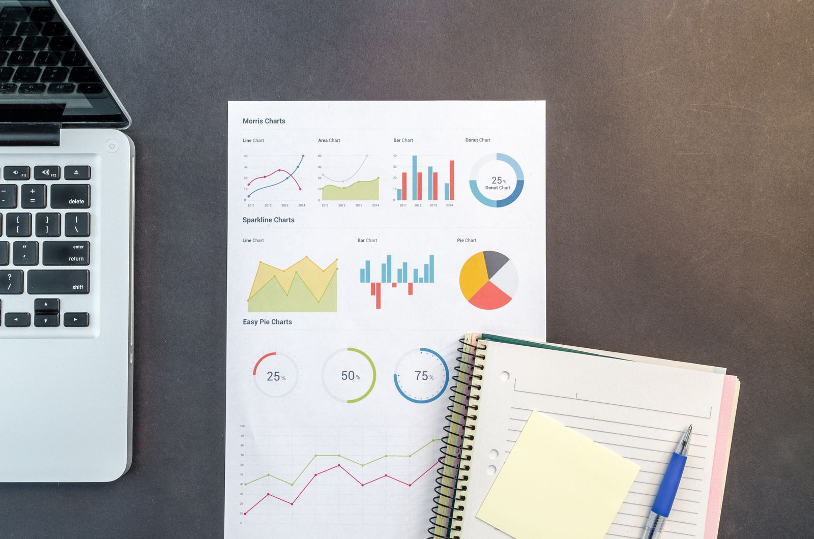

Alles wat je zaak zichtbaar maakt, op één kalender.
Zichtbaar Media is een full-service marketingbureau. We plannen online en offline samen, zodat gevelreclame, drukwerk, advertenties en je website op hetzelfde moment hetzelfde vertellen.
Plan een kennismakingZo ziet één campagne eruit over twaalf weken.
Een verzonnen bakkerij opent een tweede winkel. Elke balk is werk dat wij uit handen nemen. Klik een rij om te zien wat erin zit, of filter op online en offline.

Strategie en boodschap

Wie je bestelwagen ziet en daarna je site opent, moet dezelfde zaak herkennen.Ons uitgangspunt, geen klantcitaat.
Werk in beeld
Beweeg over een beeld voor wat we er deden. Alle zaken zijn verzonnen, de foto's komen uit gratis stockmateriaal.






Eén plan betekent dat niemand iets dubbel betaalt of vergeet.
De drukker krijgt dezelfde kleuren als de webdesigner. De radiospot noemt dezelfde actie als de advertentie. En de eigenaar weet elke week wat er bij hem langskomt.
- Strategie en merk
- Websites en webshops
- SEO en Google-advertenties
- Sociale media
- Content, foto en video
- Drukwerk en signalisatie
- Voertuigen en affiches
- Beurzen en evenementen
- Radio, pers, huis-aan-huis
- Data en rapportering
Eerst luisteren
Een kennismaking op jouw zaak. We zeggen eerlijk wat we zouden laten liggen.
Daarna één aanspreekpunt
Eén persoon bij ons praat met de drukker, de plaatser, de adverteerder en de fotograaf. Jij ziet proeven vóór er iets gedrukt of gepubliceerd wordt.
Vertel wat er moet gebeuren.
Je krijgt een antwoord van een mens, met een voorstel voor een eerste gesprek.